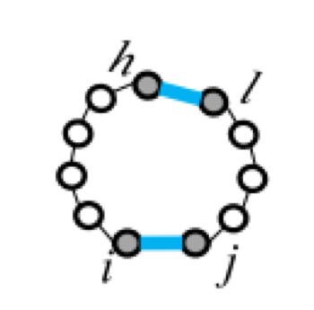

Free energy minimization of RNA seconary structure.¶
- In cells, RNAs are likely to form energetically stable secondary structure.
- The correctness of secondary structure should be evaluated based on the free energy, rather than the number of base-pairs (Nussinov Algorithm)
- We first describe a way to calculate the free energy of a particular RNA secondary structure.
- We describe the Zuker algorithm which calculates the RNA secondary structure with the minimum free energy (MFE).
Free energy of RNA secondary structure¶
- The free energy of a secondary structure is approximated as the sum of the free energy of "loops".
- The free energy of individual loop is given by experimental data. (ex. $\mathrm{C-G: }-3.4\mathrm{kcal/mol}$, $\mathrm{U-A: }-0.9\mathrm{kcal/mol}$)
Five types of "loops"¶
| hairpin loop | stacking | bulge loop | internal loop | multi-loop |
|---|---|---|---|---|
|  | ||||
| F1(i,j) | F2(i,j,h,l) | Fm=a+bk+cu | ||
- a,b,c: constant
- k: the number of base-pairs in a multi-loop
- u: the number of single stranded nucleotides in a multi-loop
Algorithm¶
| variable | meaning |
|---|---|
| $W(i,j)$ | the minimum free energy of subsequence from $i$ to $j$. |
| $V(i,j)$ | the minimum free energy of subsequence from $i$ to $j$ when $i$ to $j$ forms a base-pair. |
| $M(i,j)$ | the minimum free energy of subsequence closed by two or more base pairs. |
| $M1(i,j)$ | the minimum free energy of subsequence closed by one or more base pairs. |
Recursion¶
$$ \begin{aligned} W(i,j) &= \min \begin{cases} W(i+1,j)\\W(i,j-1)\\V(i,j)\\\min_{i\leq kInitialization¶
In [1]:
from kerasy.Bio.structure import Zuker
from kerasy.utils.bio import readMonoSeq
In [2]:
model = Zuker()
In [3]:
# 以下の形のパラメタファイルを受け取ります。
! cat params.json
In [4]:
model.load_params("params.json")
In [5]:
model.params()
In [6]:
model.stacking_cols
Out[6]:
In [7]:
model.stacking_score
Out[7]:
In [8]:
# サンプル配列
sequence = readMonoSeq(path="sample_seq4.fasta")
In [9]:
print(sequence)
In [10]:
# 最大ペアの配列
model.predict(sequence[0])
In [11]:
model.W
Out[11]:
In [12]:
model.M
Out[12]:
In [13]:
model.V
Out[13]: